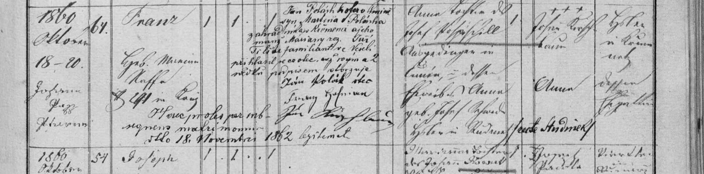

Franz, nar. 18. 10. 1860 v Čuníně čp. 64, pokřtěn 20. 10.; nemanželský syn Anny Pospíšilové. Přípisek: legitimován sňatkem rodičů 18. 11. 1862, otec Jan Polák se k němu přihlásil podpisem.
Týká se: Jan Polák1865–1943, Jan Polák1838–1915

Text z matriky a překlad
Přepis originálu
Franz, nar. 18. 10. 1860 v Čuníně čp. 64, pokřtěn 20. 10.; nemanželský syn Anny Pospíšilové. Přípisek: legitimován sňatkem rodičů 18. 11. 1862, otec Jan Polák se k němu přihlásil podpisem.
Překlad
Franz, nar. 18. 10. 1860 v Čuníně čp. 64, pokřtěn 20. 10.; nemanželský syn Anny Pospíšilové. Přípisek: legitimován sňatkem rodičů 18. 11. 1862, otec Jan Polák se k němu přihlásil podpisem.